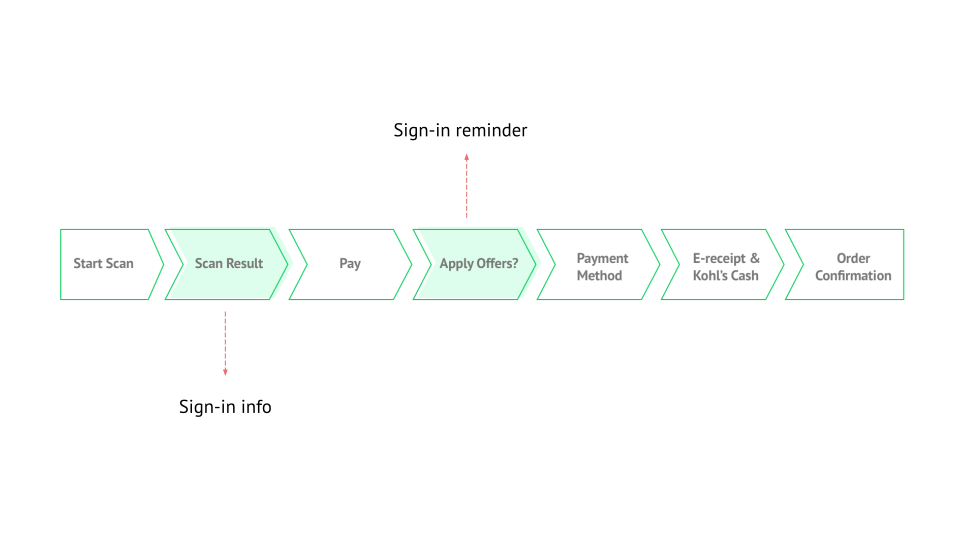
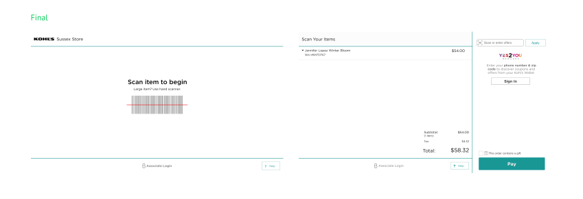

A Closer Look
When & how to sign in as a rewards member?
While checking out, theoratically, there are 3 ways for customers to
sign in and identify themselves as a rewards member. So initially all
the design concepts are about how to display these 3 sign-in methods on
a side panel of the checkout screen. However, our lab test results shows that
1. Most customers are
used to sign in with phone number.
2. They usually start checkout without looking at the screen first.
Instead,
they will simply start scanning items.
This means that most customers will have a difficult time to apply their coupons,
which based on our early survey, is people’s main concern when they
learned that Kohl’s will be providing the self-checkout line.
Based on the findings, I re-examined the flow and proposed something
different this time:

As shown above, the new design will provide the sign-in information
after customer start to scan, and it will also remind the customers
to apply their coupons once they finish scaning and ready to pay. We
got quite positive feedbacks on this new flow, it makes sure that:
1. Customers can
start checking out right away without too much
information upfront.
2. The sign-in information is
always available while checking out.
3. We will remind customers
proactively about the coupons right before they are ready to pay.

And once they signed in, we will clearly show available Kohl’s
cash and coupons for customers on the right panel.
This is how we setup the lab using the same cashier checkout
system and an eye-tracking device to learn how our customers
interact with the design proposals.
How to clearly show and celebrate the earned rewards?
Kohl’s is known for its Kohl’s cash. We have many customers come to
shopping with Kohl's because they would like to spend or earn Kohl’s cash.
When considering self-checkout, the complicated calculation of Kohl’s cash
is people’s main complaint.
To solve this problem, I worked with the marketing team closely to
list out all the scenarios for Kohl’s cash and run through rounds
of iterations to make sure the savings is easy, clear and delightful
for customers.
To help communicate with product, engineer and marketing team,
and algin on how many different design scenarios we need, I created
this user flow map. After I listed out all the scenarios, it becomes
much clearer on how should we design this experience for users with
different preference.
Based on the flow map, the experience is designed to make sure
that customers are aware of their savings all the time while
scanning items. After they finish scanning, a dialoge box will
inform customers how much Kohl’s cash they have earned.
Lastly, the confirmation screen will once again celebrate what
they earned in this purchase.
This pilot testing photo shows a common scene: customers come to
shop at Kohl’s with all the coupons collected and would like to
make sure that she has maximized her coupons and get the rewards
she earned.
During the pilot rollout, we have:
> 92% of customers chose “Likely or Very Likely” to use again.
> 75% of customers indicated the time it took was either “Quick/Very Quick.”